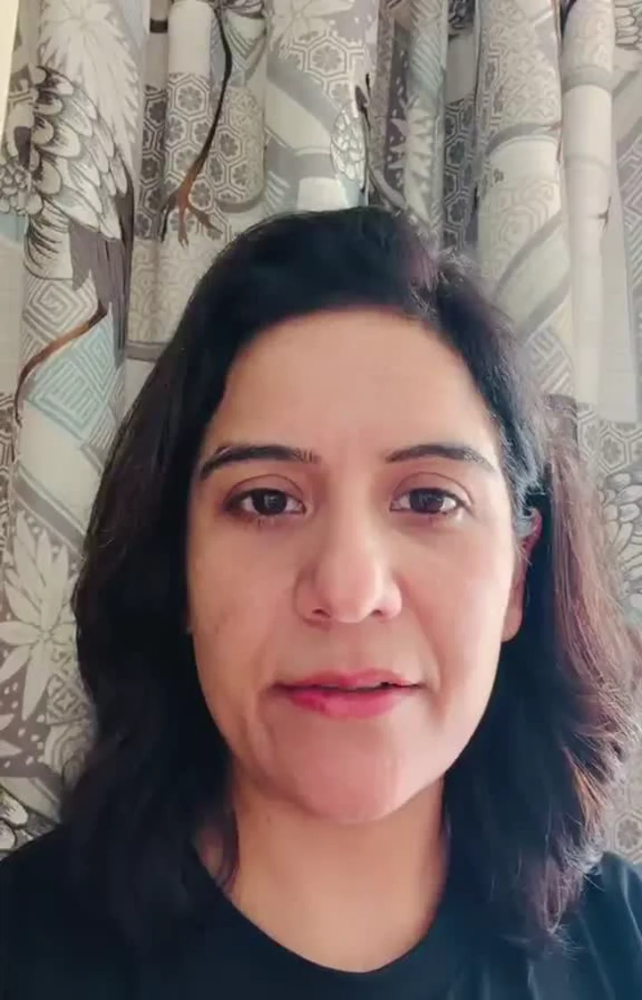

Work is changing
A new offer, leadership, stalled progress or a move into business.

DR. NARAYANI GARG / AUTHOR
Her mind-first perspective, in her own words.
THE QUESTION YOU BRING
A new offer, leadership, stalled progress or a move into business.
Marriage timing, matching, repeated delays or expectations you want to understand.
A property, study path, launch or difficult period to discuss.
CLIENT VOICES
Personal and professional challenges
 1:11
1:11Puneet shares his experience of Narayani’s guidance through personal and professional challenges.
The broader picture
“Whenever we have to take a major decision, we consult her, and she tells us the broader picture. The response is so accurate, and the availability is amazing.”

Accounts of Narayani’s wider guidance, not verified results of this service. Individual experiences are not guarantees; availability mentioned is not a response-time promise.
HOW NARAYANI APPROACHES IT
Narayani reads the relevant chart beside your account of events. Your habits, responsibilities and practical choices remain part of the conversation.
Tap a label to explore the illustration.
Focus on houses and chart themes connected with your question.
Consider periods and transits alongside real opportunities and constraints.
Explore your expectations. What you choose to do remains important.
YOUR CONSULTATION OPTIONS
These are starting points for a consultation, not separate results that a chart can promise.
Work changes, leadership, business direction, partnerships and expansion questions.
Discuss thisMarriage timing questions, delay, kundali matching and relationship context.
Discuss thisBuying, selling, moving, signing or launching, considered alongside practical facts.
Discuss thisA personal chart reading or a question about the period you are experiencing.
Discuss thisExplain what you know. Ask which reading is appropriate when the birth time is missing or approximate.
Discuss thisThe team confirms the reading, necessary birth details, format, duration and fee. You do not need to upload birth data to make an enquiry.
WHY HER APPROACH MATTERS
The person matters. Explore your beliefs and responses alongside the reading.
The choice stays yours. Ask questions and understand the reasoning. No threats or pressure to purchase a remedy.
BEGIN WITH THE NNG TEAM
Share your question. The team will explain the appropriate reading and appointment details.
Astrology
No form to complete. Choose a topic if useful, or open a general enquiry.
General Astrology enquiry
Open WhatsApp enquiryReview the message in WhatsApp and send it yourself. Opening WhatsApp does not book or pay for a session.
Please do not send private records, home footage or someone else’s information in your first message.
BEFORE BOOKING
Say so. An approximate or missing time affects the reading; ask about options rather than inventing an exact time.
No. Consider the interpretation alongside your real circumstances. Career, relationship, legal and financial decisions remain yours.
The team confirms scope, appointment format, duration, fee and availability. This page reserves no session and takes no payment.
Obtain adult consent first; parent or guardian consent is needed for a child. No third-party data is requested here.
Astrology is an interpretive tradition, not a reliable prediction or a substitute for professional advice. A reading cannot guarantee a promotion, marriage, business profit or legal outcome.